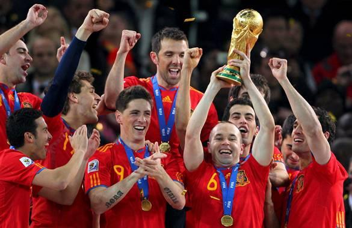

La Copa Mundial de la FIFA Sudáfrica 2010 (en inglés y afrikáans, respectivamente: 2010 FIFA World Cup y FIFA Sokker-Wêreldbekertoernooi in 2010) fue la XIX edición de la Copa Mundial de Fútbol. La competición se celebró en Sudáfrica, entre el 11 de junio y el 11 de julio de ese año, siendo la primera vez que el torneo se disputaba en África y la quinta que lo hacía en el hemisferio sur, superando el país anfitrión en la elección previa a Egipto y Marruecos. Tras la consagración de España ante Países Bajos, este Mundial fue el primero jugado fuera de Europa en el que se proclamó campeón un equipo de dicho continente, además de que fue la primera vez desde 1998 en que ganó un equipo sin copas mundiales anteriores en su palmarés, así como la primera vez desde 1978 en que dos equipos sin copas mundiales se enfrentaron en la final. Por su parte, fue la primera vez desde 1962 en que Europa y Sudamérica no se alternan el campeón mundial, ya que en la edición anterior el campeón también fue europeo (Italia). Como campeones del mundo, España participó en la Copa FIFA Confederaciones 2013.
